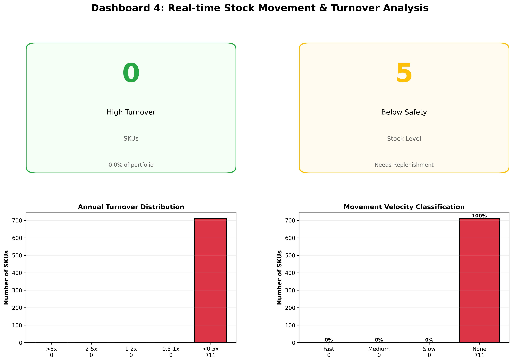

Optimizing warehouse efficiency through process redesign, automation and performance management
A warehouse operation was burdened by manual processes, inefficient workflows and lack of performance visibility. Order fulfillment was slow and error prone, impacting customer service.
Achieve 98%+ PO fulfillment rate through process optimization, automation and real time performance management.
Analysis showed that 60% of warehouse time was spent searching for items due to location inaccuracy and lack of system guidance. Batch processing opportunities could reduce handling by 40%.
Real time warehouse performance monitoring and throughput analysis

We can optimize your warehouse operations through process redesign and performance management.
Improve Warehouse Performance